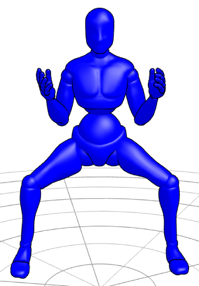
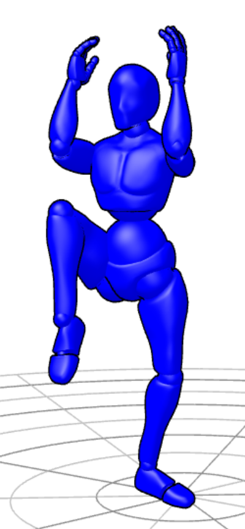
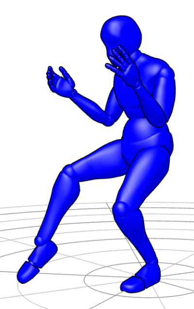

LION DANCE

Table of Contents
The History of Lion Dance
Chinese Guardian/Stone Lions (石獅; shíshī) and their origins go back thousands of years. You often see two stone lion statues outside of Chinese buildings, which are often mistaken for dogs, or more commonly in the west, "Foo Dogs". There are always two lion statues, one male (right) with a hand on a ball (Earth), and one female (left) with a hand on a lion cub. The male lion is responsible for protecting the building, while the female lion is responsible for protecting the people in the building. Lions represent balance, power, protection, and fortune.
Lion Dancing (舞狮; wǔshī) involves these same lions, although instead of being protective and stationary, these dancing lions would be more active in attacking and scaring away demons (or Nian. To accompany the lion, humans would play loud instruments (drums, cymbals, and gongs) along with setting off firecrackers. By scaring away such demons, the lion's dancing intrinsically brings good luck and fortune with it.
Over time, different regions and countries have developed their own appearances for lion costumes, as well as their own music and dances. There is Northern Chinese, Southern Chinese, Japanese, Korean, Vietnamese, Indonesian and even Tibetan variations of lion dancing. The specific style of lion dancing that I teach is Southern Chinese, Fut San and Hok San.
My Lion Dance Journey
I first discovered lion dancing in 2007 while attending Cal Poly San Luis Obispo. I saw a group of people lion dancing and being the inquisitive college student, I asked what they were doing. Before I knew it, I was a member of the school's Lion Dance Team, which is a subsidiary of the Chinese Student Association.
Like all big men, I was taught how to be a tail first. After years of performing, practicing head movements on my own time, and a ton of weight loss, I was finally allowed to be a head. I learned that our specific style was primarily Fut San, with some Hok San thrown in. As newer members joined, there was a rising interest into doing more Hok San lion dancing, so I began to study Hok San movements, sequences, and drumming. At the time, there weren't any westernized sheet music for lion dancing. Having switched my major from Computer Science major to Music Composition, I felt responsible in capturing our lion dance team's music arrangements (see below), as well as the newer Hok San ones that I was trying to learn. This also led me into becoming my team's main drummer.
After flunking the university, I spent a couple of years in the nearby public college, Cuesta. This allowed me to still lion dance with Cal Poly's team, while improving my GPA. After getting my GPA up, I reapplied to Cal Poly but was denied. Luckily, I had applied to a few more universities, and to my surprise I was accepted into Cal Poly Pomona, which is a sister college to Cal Poly SLO. They also had a Lion Dance Troupe; their team was smaller, and their captain had graduated the quarter prior, so I decided to join and help them out.
While I was not in charge of booking events, I was put in charge of training the team in all aspects of lion dancing. People started calling me Sifu, and I remained in that role for a few years until my graduation. If anyone is curious, I switched back to Computer Science. After my graduation, my old sifu from SLO who now lived near Pomona, took up the sifu role for Pomona after I left. At that point, he hadn't seen me in a few years. He saw me training the Pomona team, and I was honored when he said, "Hey, when did you get so good at lion dancing?".
Now that I am a husband, father, and full-time engineer, I am sad to say I don't lion dance with a group anymore. I do lion dancing for exercise but haven't performed in over a decade. But even though I'm not active, I am still happy teaching what I know. Hopefully my children gain interest in lion dancing, so I share the tradition with them.
Why Lion Dance?
You do not have to be Chinese, or even Asian to lion dance. There is also no gender or size discrimination either. There is a role for everyone in lion dance. But why do we lion dance in the first place? Well, there are many reasons why people lion dance:
| Tradition | Bringing good luck, good fortune, and chasing away bad spirits. |
| Competition | Competing against rival kung fu schools and seeing whose kung fu is best. |
| Badass | I just think lion dancing is really cool. It's also a great way to show off your kung fu. |
| Exercise | I don't know anything that makes you sweat more than lion dancing. |
| Music | Some just like to play in the band. I personally love drumming. |
| Acting | Making a Chinese lion costume believable requires a lot of work, but it sure pays off. |
| Comradery | All of my lion dancing brothers and sisters, we are bonded for life. |
| Money | Let's face it. After the initial investment of lion heads, costumes, band instruments, and other equipment, you start profiting from performing. If an activity earns money, then it is a business at the end of the day. |
Beginning Lion Dance
If you are interested in lion dancing, then you should first check for existing teams near you. Some lion dance teams are territorial and can get aggressive (this is an extreme case, but I've seen this in person). But where do you find a lion dance team? Look for kung fu schools, Buddhist temples, Chinese student groups in universities, and as a last resort you can ask local Chinese restaurants if they have a regular lion dancing team that blesses their restaurant.
Whether you have a sifu or not, I would suggest watching lion dance competitions which has the best of the best. You can learn by emulating at first, and then start injecting your own flair the more comfortable you are with the movements.
An established group would already have regular clientele. If you're a solo agent, you will need to advertise yourself to restaurants, wedding venues, and to Lunar New Year event organizers. The bare minimum team would be 3 people, 2 for the lion, and a drummer. Optimally, a team should have at least 8 people, 4 for lions, a drummer, cymbal, gong, and a guide for the lions.
Avoiding Bad Luck
Before doing any lion dancing, you should know the things not to do. Since lions are believed to bring good luck, we should be aware of the things that would bring bad luck.
- The number 4 is bad luck in China, like the number 13 is in the US. "Four" in Chinese sounds like "death". Avoid doing things 4 times in a row.
- Always start things on the left side. Another Chinese superstition.
- Even if you're not Buddhist, it's bad luck and disrespectful for a lion to pass a statue of Buddha without doing three bows to it (heaven, earth, man).
- Avoid the color white. White is meant for funerals. Don't use white banners, white uniforms, or white paint. It's even bad luck to accept money in a white envelope.
- Never step or jump over an unused lion, even its train. This signifies that someone is "above" the lion. And the only one above the lion are gods.
- Never exit a building facing outward. Always exit backwards. If a lion turns their back before leaving, then the evil spirits might come back.
- Never perform in a lion that hasn't been awakened / given a spirit / gone through the dotting ceremony. This is when a dot of red paint is put on each eye, the mirror, back of the horn, ears, tongue, feet, back, and tail. Here is a good succinct video of the ceremony. This ceremony is also when a name is given to the lion. It doesn't have to be a Chinese name; my favorite name for a lion I used was Mr. Sparkle lol.
- Never touch the mirror or horn of a lion, unless it's during the awakening ceremony. This affects the lion's ability to scare bad spirits away.
- If you are the head of the lion, never stick your arm out of the mouth (super tongue). It's not bad luck or anything, it just looks wrong and it's disrespectful to the audience.
Stances
The majority of movements are done in a stance. These stances originate from Kung Fu forms, which is why many Kung Fu schools have a lion dancing. These stances are the foundation of every movement you do as a lion. I was taught, "If you're not in a stance, then you're doing it wrong". All stance screenshots were created in JustSketch.me.
| Horse (馬步; mǎ bù)
A squat where the thighs are parallel to the ground. The legs are typically held wider than a normal squat. Weight is equally distributed between both legs. The lion head could be held up or on shoulder. The name comes from looking like you're sitting on a horse. |
 |
| Crane / Rooster (金雞獨立; jīn jī dú lì)
Stand on one leg with the other leg bended as high as possible and toes pointed down. All weight balanced on standing leg. The lion head is held up and pointed down. The name comes from cranes who often are seen standing on one leg. |
 |
| Cat / Empty (貓步; māo bù)
Standing with the back leg slightly bent with the foot fully planted and perpendicular to the body. The front leg is parallel with the body, also slightly bent with only your toes touching the floor. 90% - 100% of the weight is on the back leg. The lion head rests on the shoulders. The name comes from cats who cautiously approach with little-to-no weight on their front paw. |
 |
| Panther / Tiger (仆步); pǔ bù)
A very low stance where one leg is straight and the other is bent. Weight is equally distributed between both legs. The lion head is typically held up. The name comes from large cats such as a panther or tiger in a pouncing position. |
 |
| Unicorn (麒麟步; qí lín bù)
One leg crosses over the other. The back leg is bent with the sole facing away from the direction you're stepping. Weight is equally distributed between both legs. The lion head is held on shoulder, facing the same way as the back leg and downward. The name comes from the Qilin (or Kirin in Japan), which look like unicorns to the western world. The crossed legs represent the purity of Qilin. |
 |
| Semi-Horse (半马步; bàn mǎ bù)
Like a Panther but standing upright and the front foot is facing forward. Weight is equally distributed between both legs. Weight is about 70% on the back leg. The lion head is held on-shoulder or held up. This is typically a transitional step to Bow & Arrow. The name comes from looking like a partial horse stance. |
 |
| Bow & Arrow (弓步; gōng bù)
Like the Semi-Horse stance, except with the torso facing the opposite way. Stand with front leg bent to a 90-degree angle and the back leg is straight back with the foot perpendicular to the body. Weight is equally distributed between both legs. The lion head is held up and forward, or on the shoulders. The name comes from the motion of shooting from a bow. Sometimes is referred to as Forward Stance. |
|
| Steal (偷步, tōu bù)
From a standing or Horse stance, take one leg and extend it straight behind the other leg. The front foot should be planted, with the leg straight or slightly bent. The back leg should be straight with the toes/ball touching the ground. Weight should be primarily on the front leg. The lion should be looking in the direction of the back leg. The name comes from a weapon stealing technique, which allows you to slip into enemy's attack and steal their weapon safely. |
 |
Movement & Sequences
There are several movements/sequences that are common in all lion dance schools. They might go by different names, but I'll be using names that I've always used.
| Basic Acting | When you are the lion's head, try to pretend to be as excited as a dog but with the curiosity of a cat. Head movements shouldn't look unstable, unbalanced, or meandering; they need to be intentional, snappy, with defined stances as seen in Kung Fu demonstration. And remember that it is called lion "dancing", and that there's a band playing. So don't just move around - dance! |
| Running | It's essentially just trotting while the head bobs left and right while lifted high, or in a diamond motion when holding the head low. |
| Retreating | The lion turns sideways and does three Unicorn hops away from something, while doing back-takes. |
| Short Bows | Three bows that are done in place, left, right, and left again. The lion head dips to to one side, goes up and around toward the front in a circular motion, ending a cat stance. |
| Medium Bows | Walking forward and then shuffling back, three times. |
| Long Bows | Approaches followed by a retreat (mentioned later). Done three times. |
| Lunge | A large leap that can be done in any direction. The jump can be adjusted to cover short or long distances. The stance transitions for the lunge are as follows: Bow, Horse, Arrow, Crane, midair tuck, Crane (opposite leg), Bow, Horse, Arrow. |
| Hop | A little gallop in place where the lion head pops up and shakes a little. |
| Licking | The lion head extends slowly shakes along a leg, typically done three times. |
Drum, Cymbals, and Gong
A lion dance team's band is comprised of three instruments: drum, cymbals, and gong. Below I'll explain all the different drum sequences on the PDF document. The first ones listed that aren't numbered, are not notated in the PDF. As for the ones that are notated, normal (round) notes are basic drum hits. The X's are clicks which are done on the edge of the drum. And the hollow diamonds aren't half notes, they are muted drum hits. The solid diamonds are just mistakes which should just be round.
| Heartbeat | Played throughout the performance and ties all the drum sequences together. The drum beat itself sounds like a heartbeat, while the cymbals chime on each quarter note, and the gong hits on every other quarter note. The lion is typically just sitting, standing, or walking around with the heartbeat. |
| Running | This is played continuously while the lion in doing something more exerting lion running, jumping, or stunting. It sounds like the middle of the Chrysanthemum beat, except without the pause and played continuously. |
| Drumroll | All instruments just play as fast as possible. It can slow down or speed up depending on what the lion is doing. This is usually played for anticipation of something cool, like a big stunt or a lettuce toss. |
| Chrysanthemum | This is an intro beat into different parts of the performance. The lion is usually dancing in place, bobbing left and right, and then hops when there's a rest on the 7th measure. |
| Middle Testing | Testing in general is the cat-like curiosity I was talking about. The lion extends the head in a circular motion around the object it's investigating, and then hops at the ends to show the dog-like excitement. |
| Investigative Step | The lion approaches and steps with every beat in the first several measures. Then hops in circular motion around the object before either laying down, sitting, or retreating. |
| Ending | Done at end of sequences to give the lion time to get ready for the next sequence. There are no specific movements to it. |
| Lower Testing | Three approaches which have three nods, alternating sides. And in between, there are hops. This is when the lion amping up in excitement for an object. |
| Forward Testing | The lion is now really excited for an object and about to pick it up. The head will extend over the object and shake side to side, then end with a hop. |
| Climbing the Mountain | This sequence is reserved for doing a long sequence of stunts. Nothing specific. |
| Lion Scratching | The lion approaches an object and will turn sideways and scratch its side and then leap away. This is done three times. |
| Jumping | This is three sets of Jump Kicks (see Stunts). |
| Half Testing | This is just an approach without the investigation. It's kind of like a tease. |
| Retreating | This is an old sequence that not many teams do anymore. The lion turns sideways three retreats away from an object. |
| Taunting | Exactly what the name implies. This can involve biting and kicks. |
| 7 Stars | This is a Fut San style beat which involves three sets of Steal stances and blinks, followed by sweeping shakes, ending in a Hop. We used this as another test just to mix things up. You don't always do all the tests, just two or three. |
Stunts, Stacks, Sets
What everyone loves to see and the most exhausting things to do - the stunts. These require the head to wear a sturdy sash for the tail to lift them and assist with jumping. Before any stunt, there should be voiceless communication between the head and tail. The most common ways for heads to communicate is either through the choreography, feet tapping, or waist wiggling. The tail's method of communicating is much more universal, which is shaking the head's sash to acknowledge the begin the stunt. When the stunt is acknowledged by both head and tail, there is a small prep-jump into crouch, as to maximize the jumping potential. All stunt screenshots were created in JustSketch.me.
| Head Sit
The head is assisted in jumping onto the tail's head. The head's front leg will be like a Cat Stance, while the back leg is bent and perpendicular to the body, resting on the tail's chest. |
 |
| Shoulder Stand
What the name implies and is used to reach highly hung "greens". Not normally done in one motion like cheerleaders, because of the added weight. This can be transitioned from a head sit or done as a climb. The climb is complicated and only done by experienced dancers. For the climb, the tail will detach themselves from the costume, and then gets into horse stance. The head runs around and behind the tail using them as 2-step ladder; first step being the thighs and second being the shoulders. This should be implied, but the climb is done without the use of the head's hands. |
 |
| Single Stand
The head jumps and gets into a crane stance. The tail lifts and gets into an arrow stance, then sets the head's extended foot onto their front thigh. |
 |
| Jump Kick
The head jumps as high as they can. The tail lifts them as high as they can and the head kicks their legs in a V shape. The kicks must snap out and back in quickly so that the head can land safely. This is typically done in place. |
 |
| Leap
Just a big jump forward for both the head and tail. The head jumps as high as they can, and the tail lifts and pushes them forward. The tail takes a step before leaping as well. This is done to jump over a large gap, and essential when doing stilt work. |
 |
| Lap Stand
The head does a short hop with legs shoulder width apart. The tail aims the head's feet onto their thighs while in horse stance. There is also a narrow-variation which is done when performing on stilts. Both the head and tail would keep their legs squeezed together instead of spread wide. Doing this also allows the tail to rotate on a single stilt. |
 |
| Swing
Done from a Lap Stand. The head drops down from standing and then wraps their legs around the tail's waist while the tail shifts their balance backwards. The head then swings downward in a circular motion and uses the momentum to get back onto the Lap Stand. To support the swing, the tail can support the head by hugging them around the hips, waist, or chest. |

 |
| Forward Tumble
Done from a Lap Stand. The head goes into a swing motion, but instead tucks to one side to roll. The tail must control the tumble so that the lion head doesn't get scraped or hit, and then follows with a shoulder roll. The tail should end up lying on their back, and the head ends up standing up just above the tail who's lying down. To finish, the head needs to take a big hop forward to get back in front of the tail, who then can bend forward and sit/stand up. |
 |
| Side Roll
Done with both head and tail in panther stance. They both then roll onto their backs to the opposite side panther stance. This can also start and end standing, and the panther stances are transitional stances. |
 |
Training & Conditioning
While you can just jump into a lion costume and start learning a routine, that training method will not improve your lion dancing skills effectively. Here are a few training tips specific to lion dancing. All of these should be done without a lion head, but still holding your arms up to mimic one. Once your form is perfected, then you can add the lion head. For a practice-head, you can use also use a laundry basket.
| Stance Transitions | Try to create a sequence of stances and transition through them, focusing on form. Be conscious of mediary positions; for example, going straight from a Horse to a Crane would look pretty silly. The mediary stance in this case would be a Bow-and-Arrow. Each set of stances will have their own unique transitions, so try to practice them all. And remember, even without a lion head, you should practice the movements as if you're holding one. |
| Stance Endurance | Think of this as strength and flexibility training. Instead of quickly moving from stance to stance, you can hold them for minutes at a time. Keeping proper form for extended periods of time is harder than it sounds. |
| Kung Fu Kicks | Besides using the lion head to emote, your legs are the only other limbs you can use to emote. So, it is important to practice all the different kung fu kicks to be able to express yourself. Each kick should be done at least 10 times on alternating legs, for 2 or more sets. The three main kicks to practice are: Forward Front Kick (正踢腿; zhèng tī tuǐ), Circle Kick (里合腿; lǐ hé tuǐ), and Outward Circle Kick (外摆腿; wài bǎi tuǐ). Practicing these kicks will condition your legs to kick faster and higher, thus being more expressive while lion dancing. |
| Jumping and Landing | There is nothing worse than hurting yourself while landing during stunts. Before practicing stunts with a tail, make sure to train your jumps so that they are tucked and high. And also focus on absorbing the ground impact by bending your legs while landing. You should barely hear any sound when landing. Train by doing 3-5 jumps in a row for 3 or more sets. Remember, you have to hold your arms up like you're holding a lion head, so you can't swing your arms for momentum. |
| Lunges | Try training your lunges separately in both height and distance. Make sure to practice lunges in both directions, not just one. You also should barely hear your feet impact the ground. |
| Stunts | Self explanatory, but focus on proper form in and out of the lion costume. If stunts are done improperly, this could lead to injury, especially when performing on stilts. |
| Basic Training | Performing cardio and weight lifting for general physique will help with lion dancing. I know it's common sense, but I'd be remissed to not mention it. |
| Recording | Nothing helps you improve more than watching videos of yourself. Not many people know how to lion dance, but many know what bad lion dancing looks like (much like chefs and critics). Are your kicks high enough? Are you movements snappy enough? Is the head tilting back or forward too much? It's hard to know what you're doing wrong when you're sweating it up in the lion costume. So, don't be afraid to record and critique yourself. |